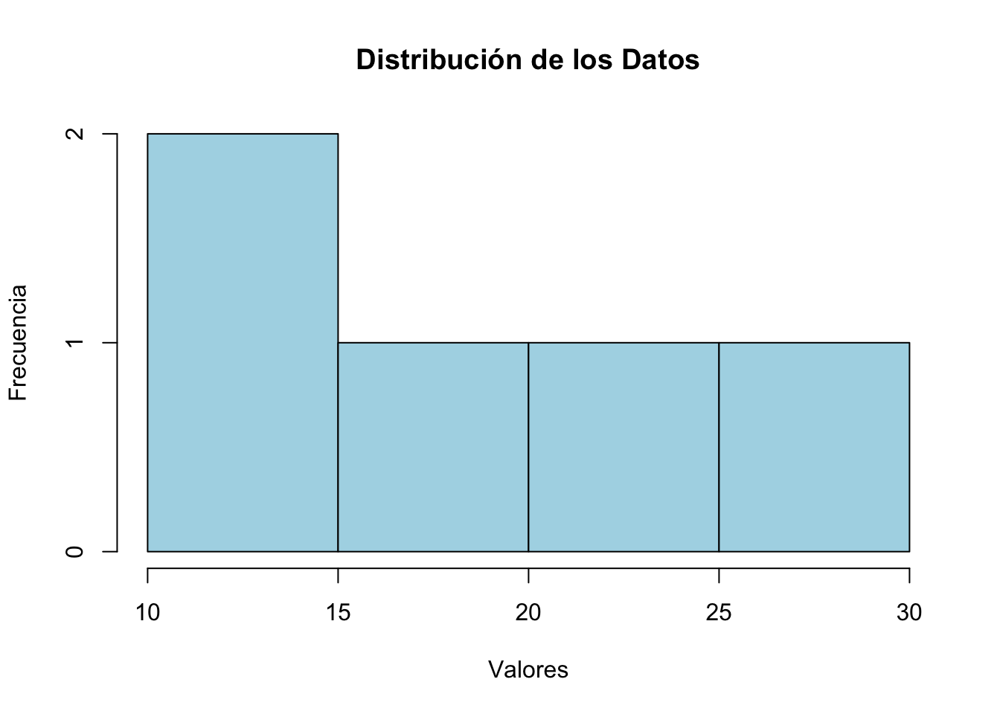

La estadística descriptiva organiza, resume y presenta la información contenida en un conjunto de datos, proporcionando una visión general de sus características principales. A continuación, se presentan los conceptos fundamentales.
1.1 Medidas de tendencia central
1.1.1 Media (\(\bar{x}\))
La media es el promedio de los valores en un conjunto de datos y se calcula como:
\[
\bar{x} = \frac{1}{n} \sum_{i=1}^n x_i
\]
donde: - \(n\): número total de observaciones, - \(x_i\): valor de la \(i\)-ésima observación.
1.1.2 Mediana
La mediana es el valor central en un conjunto de datos ordenados. Si el número de observaciones (\(n\)) es impar:
Evalúa la diferencia máxima entre la función de distribución empírica y la teórica:
\[
D = \sup_x |F_n(x) - F(x)|
\]
donde: - \(F_n(x)\): función de distribución empírica, - \(F(x)\): función de distribución teórica.
1.5 Representación gráfica
La estadística descriptiva también utiliza herramientas visuales como: - Histogramas, - Diagramas de caja y bigotes, - Gráficos Q-Q.
Estos conceptos son esenciales para describir un conjunto de datos antes de aplicar métodos estadísticos más avanzados.
1.6 Ejemplo código en R y Resultados
# Crear un vector de datosdatos <-c(10, 15, 20, 25, 30)# Calcular medidas descriptivasmean(datos) # Media
[1] 20
median(datos) # Mediana
[1] 20
sd(datos) # Desviación estándar
[1] 7.905694
# Crear un histograma de los datoshist(datos,main ="Distribución de los Datos",xlab ="Valores",ylab ="Frecuencia",col ="lightblue",border ="black")

Ejecutar el código
---title: "Estadística Descriptiva"page-title: falseformat: html: mathjax: true---# Estadística DescriptivaLa estadística descriptiva organiza, resume y presenta la información contenida en un conjunto de datos, proporcionando una visión general de sus características principales. A continuación, se presentan los conceptos fundamentales.## Medidas de tendencia central### Media ($\bar{x}$)La media es el promedio de los valores en un conjunto de datos y se calcula como:$$\bar{x} = \frac{1}{n} \sum_{i=1}^n x_i$$donde: - $n$: número total de observaciones, - $x_i$: valor de la $i$-ésima observación.### MedianaLa mediana es el valor central en un conjunto de datos ordenados. Si el número de observaciones ($n$) es impar:$$\text{Mediana} = x_{\left(\frac{n+1}{2}\right)}$$Si $n$ es par, se calcula como el promedio de los dos valores centrales:$$\text{Mediana} = \frac{x_{\left(\frac{n}{2}\right)} + x_{\left(\frac{n}{2}+1\right)}}{2}$$### ModaLa moda es el valor que aparece con mayor frecuencia en el conjunto de datos.## Medidas de dispersión### Varianza ($s^2$)La varianza mide la dispersión de los datos respecto a la media:$$s^2 = \frac{1}{n-1} \sum_{i=1}^n (x_i - \bar{x})^2$$### Desviación estándar ($s$)La desviación estándar es la raíz cuadrada de la varianza:$$s = \sqrt{s^2}$$### RangoEl rango es la diferencia entre el valor máximo y el valor mínimo en el conjunto de datos:$$\text{Rango} = x_{\text{max}} - x_{\text{min}}$$### Asimetría ($g_1$)La asimetría evalúa la simetría de la distribución:$$g_1 = \frac{\frac{1}{n} \sum_{i=1}^n (x_i - \bar{x})^3}{s^3}$$### Curtosis ($g_2$)La curtosis mide la concentración de los valores en los extremos de la distribución:$$g_2 = \frac{\frac{1}{n} \sum_{i=1}^n (x_i - \bar{x})^4}{s^4} - 3$$## Transformaciones y estandarización### Puntuaciones ZConvierte valores a una escala estándar con media 0 y desviación estándar 1:$$z_i = \frac{x_i - \bar{x}}{s}$$### Escalamiento a rangosAjusta los datos al rango $[0,1]$:$$x_i' = \frac{x_i - x_{\text{min}}}{x_{\text{max}} - x_{\text{min}}}$$## Pruebas de normalidad### Gráficos Q-QEvalúan visualmente si los datos se ajustan a una distribución normal al comparar cuantiles observados con los teóricos.### Prueba de Shapiro-WilkContrasta la hipótesis de normalidad:$$W = \frac{\left( \sum_{i=1}^n a_i x_{(i)} \right)^2}{\sum_{i=1}^n (x_i - \bar{x})^2}$$### Prueba de Kolmogorov-SmirnovEvalúa la diferencia máxima entre la función de distribución empírica y la teórica:$$D = \sup_x |F_n(x) - F(x)|$$donde: - $F_n(x)$: función de distribución empírica, - $F(x)$: función de distribución teórica.## Representación gráficaLa estadística descriptiva también utiliza herramientas visuales como: - Histogramas, - Diagramas de caja y bigotes, - Gráficos Q-Q.Estos conceptos son esenciales para describir un conjunto de datos antes de aplicar métodos estadísticos más avanzados.------------------------------------------------------------------------## Ejemplo código en R y Resultados```{r}# Crear un vector de datosdatos <-c(10, 15, 20, 25, 30)# Calcular medidas descriptivasmean(datos) # Mediamedian(datos) # Medianasd(datos) # Desviación estándar# Crear un histograma de los datoshist(datos,main ="Distribución de los Datos",xlab ="Valores",ylab ="Frecuencia",col ="lightblue",border ="black")```